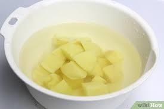
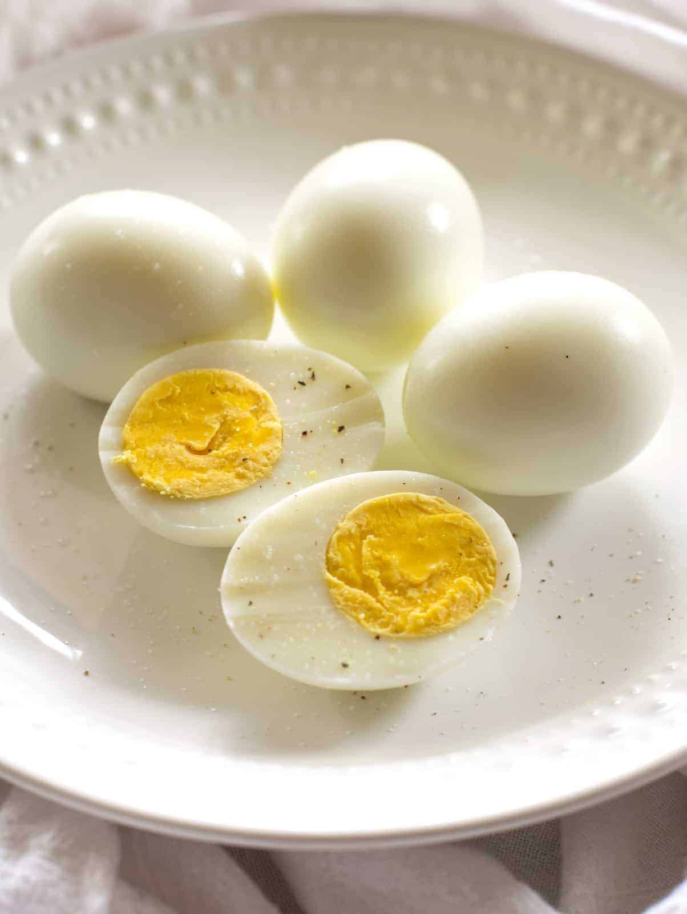
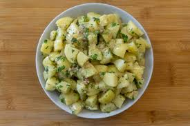

return to the index
Potato and egg salad
.jpg)
A simple yet delicious and healthy recipe, that doesnt require to much effort and ingridients to make it in home.
Ingridients:
4 large potatoes
4 hard-boiled eggs
1⁄2white onion
2 celery stalks
4 tablespoons of mayonnaise
1 teaspoon mustard
1 teaspoon of vinegar
Salt and pepper to taste
Preparations:
1. Place the whole unpeeled potatoes in a pot with plenty of water and a little salt. Cook until soft,
about 30-40 minutes depending on size. I usually try to poke a knife through the middle to check for
doneness.
2. Put the potatoes in a bowl of cold water to cool them and then proceed to peel them and cut them into small
or medium chunks.

3. To cook prepare the hard-boiled eggs, bring water to a boil in a medium sized saucepan. Then gently add the
eggs. Let the eggs cook in the boiling water for 10 minutes, then transfer them to a bowl with cold water until
you are ready to peel them.
4. I recommend saving one of the eggs to use as a garnish for the salad.
Peel and then dice the rest of the hard-boiled eggs.

5. In a medium bowl or platter, add the chopped potatoes, the chopped hard-boiled eggs, the diced white onion,
and the chopped celery.

6. To prepare the dressing, mix the mayonnaise (or yogurt) with the mustard, vinegar, salt and pepper.
Pour this dressing on top of the chopped potatoes/eggs and mix well.
7. Taste the salad and adjust the amount of salt/pepper to taste. Add the chopped dill and paprika. If you saved
one of the hard-boiled eggs, cut it into quarters or slices and use them to decorate the salad. The salad can be
served on top of lettuce leaves.
Return to the top